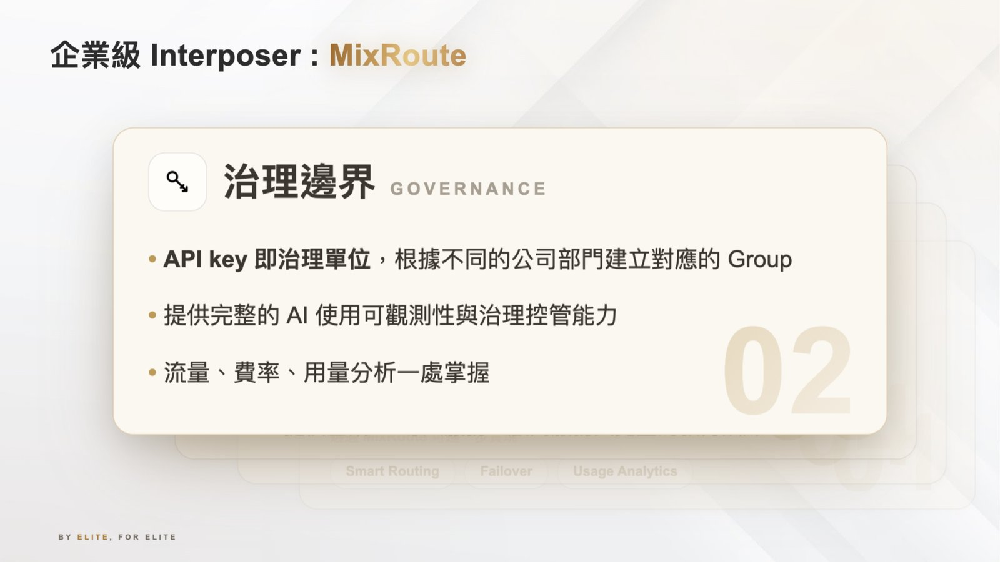
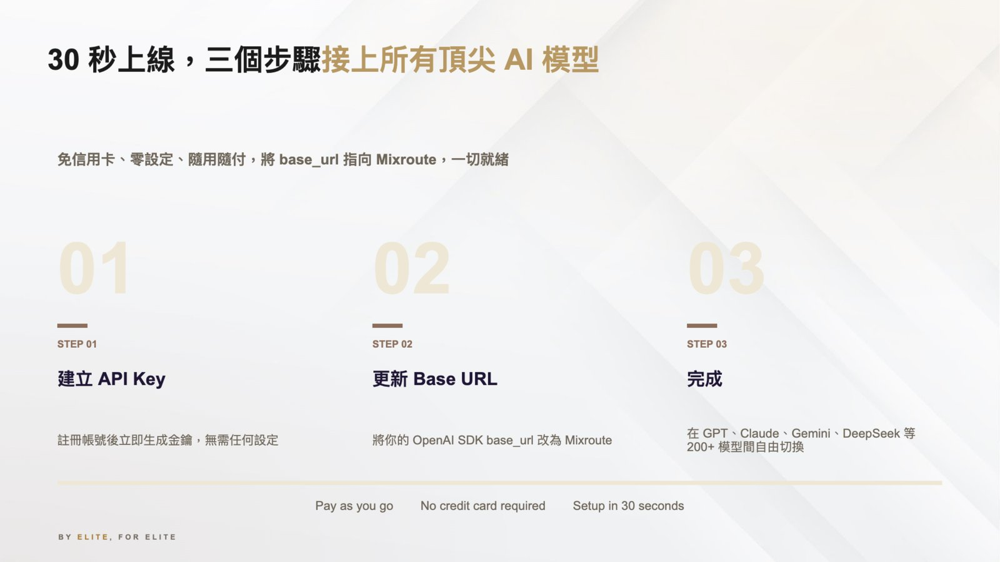

摘要
本議程原始投影片 PDF 缺乏可擷取文字層，以下內容依據議程提供之補充說明整理。講者以半導體 CoWoS／Interposer 封裝技術（連接多顆晶粒）類比企業多模型 AI 整合的挑戰：企業內眾多 AI 模型需要透過一層統一的「Router／Interposer」與既有系統串接，而非各自為政地直接對接。講者並介紹一款名為「MixRoute」的 AI 閘道／路由產品，作為此一戰略的具體實作。
重點整理
- 以半導體 CoWoS／Interposer 封裝技術類比企業多模型 AI 整合的架構挑戰
- MixRoute 提供跨多家 LLM 供應商的智慧路由（smart routing）
- 內建治理防護欄，可設定資料存取政策邊界
- 支援自動容錯移轉（automatic failover），並提供使用量分析與成本可視化
- 號稱可在約 30 秒內完成新模型的導入（onboarding）
重點圖片／架構圖


背景與挑戰
講者以半導體先進封裝技術 CoWoS／Interposer 為喻：CoWoS 透過中介層（Interposer）將多顆異質晶粒連接成一個整合系統。講者指出，企業導入 AI 時同樣面臨多個模型供應商並存的局面，若每個模型都各自與企業系統直接對接，將形成難以治理與維運的複雜度，因此需要一層類似 Interposer 的統一「Router」來銜接。
解法與架構
講者介紹「MixRoute」，定位為企業級 AI 閘道／路由層，扮演連接多個 LLM 供應商與企業系統之間的統一介面，如同 Interposer 之於多顆晶粒，讓企業不需為每個新模型重新建置整合管道。
技術重點
根據議程補充說明，MixRoute 提供跨多家 LLM 供應商的智慧路由能力、內建治理防護欄以設定資料存取政策邊界、支援自動容錯移轉，並提供使用量分析與成本可視化功能，宣稱新模型的導入可在約 30 秒內完成。
結論與啟示
講者以 CoWoS／Interposer 的類比總結：如同半導體產業透過先進封裝解決異質晶粒整合的挑戰，企業也需要以「Router／Interposer」戰略統一治理多模型 AI 整合，才能兼顧彈性、安全與成本可控性。